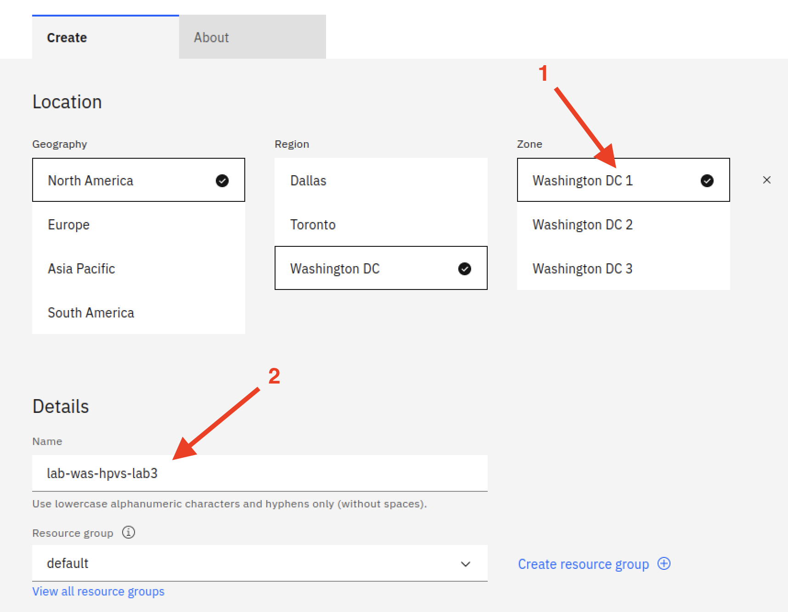

Create an instance¶
Note: There are often multiple ways to perform a task. The lab instructions may describe a particular way to go about things, but if you have prior experience with the IBM Cloud Web user interface and can perform the same task through different methods, feel free to do so. The lab instructions themselves may provide alternative ways to accomplish the tasks in different sections of the labs.
These instructions assume you are logged in to the IBM Cloud Web UI. If not, please log in before proceeding.
-
Go to your VPC
One way to do this is to start by clicking the "hamburger" menu in the top left (the icon will then turn into an "x" as shown in the screen snippet below), then click VPC Infrastucture and then VPCs:
Then, select the link for your VPC from the list that is shown:
-
Click the link to create a virtual server instance
You may have to scroll down on the page- find and click on the "Create a virtual server instance" link:
-
In the Architecture section, click the IBM Z, LinuxONE tile. In the Hosting type section, click the Public tile. At this point, a Confidential Computing toggle should appear. Click it to select it. Then, ensure that you select the correct Zone- that is, the one for whch you created a subnet earlier (assuming you followed the lab instructions and created only one subnet). You are not finished filling out this screen yet, but see the below screen snippet for hints:
-
Give your instance a name in the Name field in the Details section. We chose lab-was-hpvs-lab3 in the screen shot below. Then, it is very important to select the Version that ends in "-10"- you may have to select the field, then hover over the second entry to confirm that ibm-hyper-protect-container-runtime-1-0-s390x-10 is selected. The screen widget may be sized such that you cannot distinguish between the image ending in -9 and the one ending in -10 without the benefit of the tool tip that appears when you hover the mouse for a bit. Hopefully this screen snippet clarifies this:

-
Scroll down and in the Advanced options section, within the Instance configuration subsection, click the arrow at the right of the User data item. Drag the lower right corner of the User data box that appears in order to enlarge it a bit, like we've done in the screen shot below:
-
At the end of the previous section of the lab, Prepare the contract, in the very last instruction, you displayed the contents of your
user_data.yaml, on your prep system. Go back to your prep system and copy the file contents that you displayed to your clipboard. Then paste them into the user data box. It should look similar to what is shown below. The screen shot below does not show the entire contract- the top of the encrypted workload section is not visible in the screen shot, but we are showing the entire encrypted environment section:
-
Go to your IBM Log Analysis Dashboard so you can verify that you receive log messages from the instance that you're about to create.
Open another tab in your browser and go to cloud.ibm.com. Log in if necessary. Assuming you're logged in, the below screenshot provides guidance on one way to get to your list of IBM Log Analysis instances:
From the list, click the Open dashboard link:

-
Now, go back to the tab where you were setting up your virtual server instance- click the blue Create virtual server button in the lower right. Reminder: you may incur costs for this action, and these costs are your responsibility. We will provide instructions to delete resources that are no longer needed to help you minimize any costs you might incur.
-
Verify that your instance has started to come up.
Within a couple of minutes of starting your instance, you should see many messages appear in your IBM Log Analysis Dashboard. However, unlike the previous lab, the instance will not come up completely until you take further action- specifically, you need to attach the data volume that you created in the previous lab. Continue with these instructions.
-
Attach the disk volume that you created in lab:
Note: The screen shots in this instruction are taken from the section for lab 2 but the process is exactly the same for your lab 3 instance, so don't be confused if you see 'lab 2' in some of these screen snippets.
Click on the link for your instance in the list under Virtual server instances for VPC:
Scroll down to the Storage volumes section and click the blue Attach button:
On the Attach storage volume screen, select the Block volume that you created in the previous lab (lab-was-datavol if you used the same name we used in these instructions) and then click the blue Save button at the bottom:
Now back on the screen displaying your instance information, you should see this data volume in the list of Storage volumes, similar to the screen shot below:
-
Now that you have attached the disk volume, startup continues and completes. Within your IBM Log Analysis Dashboard you should be able to see some messages greeting King Charles and some messages greeting Queen Camilla- this is data written from your earlier instances from labs 1 and 2. (You may need to scroll up to find them.) Then, this instance will provide similar greetings to Prince William- this provides a demonstration of successfully reusing a data volume to provide data persistence across different virtual server instances.
If something went wrong in your setup of the contract that the hyper protect container runtime detects, your instance will automatically be stopped in five minutes. So if you receive no messages within five minutes of starting your instance, it is time to contact your instructor.
-
Delete your instance.
Your instance either started successfully- as evidenced by the display of earlier greetings to King Charles and Queen Camilla and then periodic greetings to Prince William, or it failed to start successfully. In either case you will want to delete your instance at this point. Future labs will use the data volume that you created, but your current instance is no longer needed- in fact, leaving it around hinders subsequent labs- you won't be able to reuse your disk volume if it is still attached to this instance.
The screenshot below shows how you can delete an instance if you are currently displaying it- by clicking the blue Actions button in the upper right, then choosing Delete. From there, follow the instructions to confirm your intention to delete the instance. (This screen snippet is from the instance created in lab 1, but the process to delete the instance is the same.)
-
Proceed to lab 4 if your instance was successful or seek help from the instructors if your instance creation was not successful.
Created: June 2, 2023